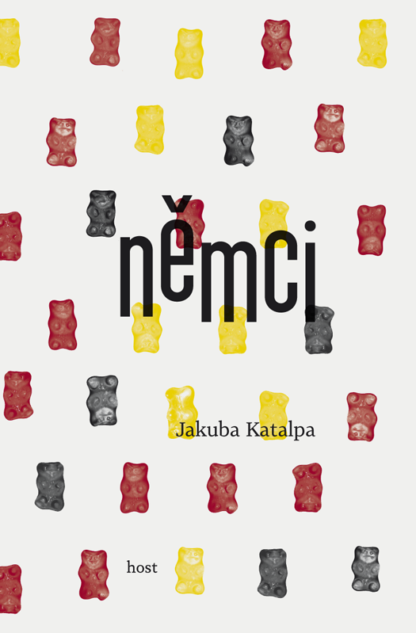
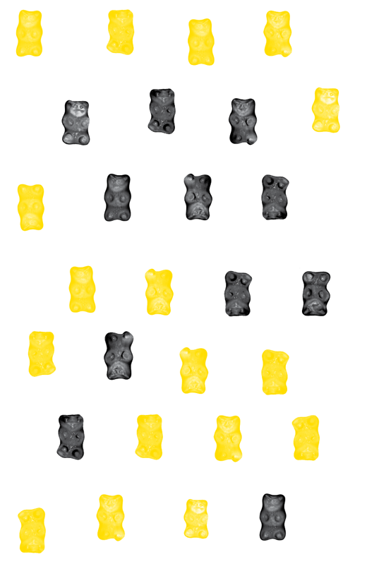

jakuba katalpa.
němci
Geografie ztráty
Brno 2012

© Jakuba Katalpa, 2012
© Host — vydavatelství, s. r. o., 2012 (elektronické vydání)
ISBN 978-80-7294-830-7 (Formát PDF)
ISBN 978-80-7294-831-4 (Formát ePub)
ISBN 978-80-7294-832-1 (Formát PDF pro čtečky)
ISBN 978-80-7294-833-8 (Formát MobiPocket)